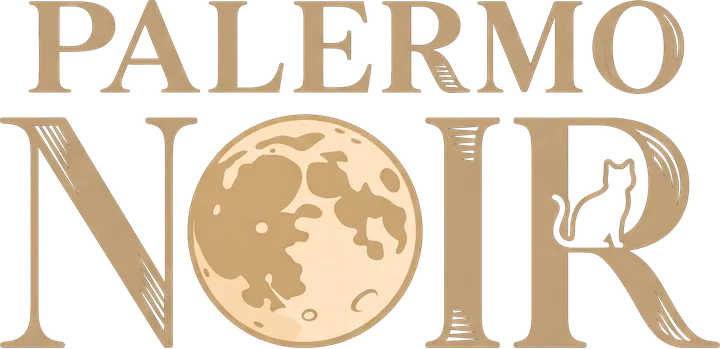

Palermo Noir is a hidden-role party game for 6 to 14 friends in one room: every phone hides a secret card, and the TV runs the town. This demo lets you learn it on your own first. You sit at a table of bots, and a guide stops the game at each new moment to show you what to tap, and why it matters.
Choose your seat: one of the 14 roles, or Surprise me for a random deal. Then a table of 6, 8 or 10 players, in English or Greek.
Choose how long. The short demo takes about six minutes, through the deal, two nights and a day. The full one plays a whole game to its end in about fifteen.
Play your part. You see the game's own screens, with the guide beside them. On your turn it rings the spot to tap, and the bots answer as real players would.
Chapters take you back to any moment, to play it again.
Every word the narrator and the guide say runs as subtitles at the foot of the screen, so you can follow with the sound off.
The killers pick a victim in secret, while the Doctor guards someone and the Police Officer checks a suspect.
The narrator tells the town who died in the night, or who was saved, and the day begins.
The bots accuse, deny and defend each other in Table talk. You point at your suspect, the most accused gets 30 seconds to answer, then everyone votes.
A tie sends the town to a second vote. Whoever goes out turns their card over, and night falls again.
No. The whole demo runs in this page, with a bot in every other seat. There's nothing to install and nothing to sign in to.
The screens, the rules and the narrator are the real game's. Only the other players are bots, and the clock waits while the guide explains.
Each player needs a phone, and the room needs one screen everyone can see, such as a smart TV's browser or a laptop. The host opens a room, and the others join with its code.
Yes. At the end, Share the night draws a picture of your own secret card to post or send, and it never shows who the demo's killers were. In a real game every phone can also share the town paper, a film poster, the newsreel or the whole table.